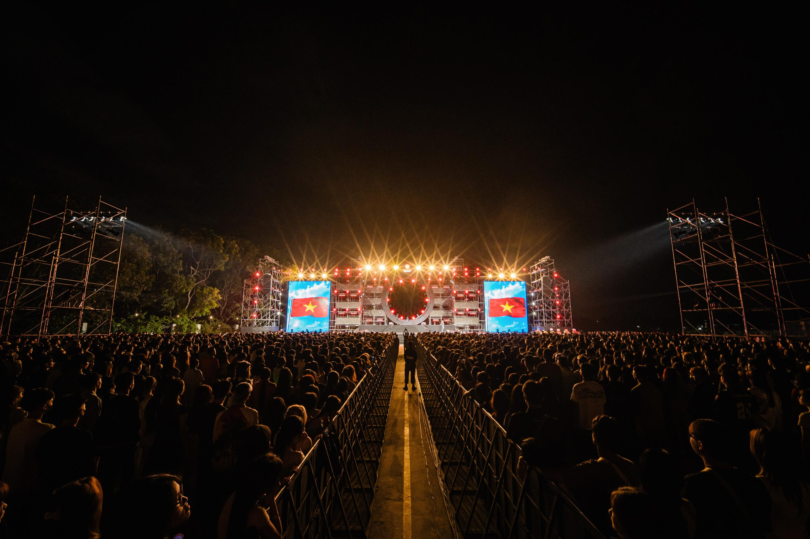

Tối 26/10, trường Đại học Đại Nam (DNU) long trọng tổ chức lễ Khai giảng năm học 2024-2025 và Đại nhạc hội chào tân sinh viên K18 với chủ đề “Rạng rỡ hừng đông” chào đón 8090 tân sinh viên K18 gia nhập ngôi nhà chung Đại học Đại Nam. Sự công phu, hoành tráng cùng các nghi thức trang trọng; màn diễu hành, chào đón trọng thể của gần 500 thầy cô và sinh viên đại diện cho 1083 CBGV và gần 20.000 sinh viên; các tiết mục nghệ thuật đặc sắc; hệ thống sân khấu – âm thanh – sánh sáng hiện đại; sự góp mặt của các nghệ sĩ nổi tiếng… tất cả đã tạo nên một sự kiện đáng nhớ, khẳng định sức mạnh đoàn kết, tình yêu thương lan tỏa vì người học tận tâm của DNU.
